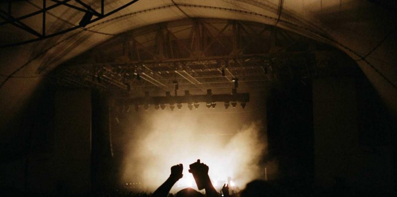

Mythology Hindu Mythology
Mahishasura: The Buffalo Demon

In the cosmically dense Indian mythology exist some of the most fantastical demons. Take the Buffalo Demon, for example. Unimaginatively anointed 'Mahishasura', literally translating to 'Buffalo Demon', is known as one of the most powerful, fierce demons, yet with a brain the size of a grain of rice. I mean, in what world does it make sense to throw all the Gods from the 'Deva Loka' (God's Abode) and not fret about offending the ultimate OG trio of Brahma-Vishnu-Shiva? Let's begin from the beginning.
Eons ago, the demon King Rambha fell in love with a water buffalo. Now, this particular water buffalo was formerly a beautiful princess named Shyamala who was cursed by a sage for interrupting his meditation.
It was never a good idea to nudge an Indian sage who's meditating. (Remember how Shiva incinerated Kaamdev for the same?) But who'd tell this to the thousands across mythology whose decision-making facilities were muted by violence and arrogance!
Anyhow, from Rambha and this cursed Water Buffalo's union came forth into this world Mahishasura, the Buffalo Demon.
We can't say for certain how traumatic Mahishasura's childhood actually was. But we could imagine his friends mocking his looks, since he had the body of a humanoid demon and the head of a buffalo. We do, however, know that Mahishasura grew up to be a vengeful demon with a solid God-Complex.
Being born to a powerful demon, Mahishasura inherited some insane powers, making him a fearful entity. Even the other demons would turn sideways if they saw this hulky buffalo-head demon walking their way. Such a powerful aura-farmer he was! But there always comes a time when all the demons get bored playing with innocent humans and other weaker demons, and they become too ambitious. Mahishasura's eyes set on the throne of the Deva Lok (God's abode), inhabited and ruled by the Devas, led by Indra.
Now, the tussle between Devas and Demons is as ancient as the sun and the moon. Every demon, when they become strong enough, stupidly develops this urge to rule the Deva Lok. Mahishasura was no exception. But he was smart enough to know that special powers would be required if he had to maintain the throne on his buffalo head. So, he stood on one leg (literally) for years to enter Brahma's good books, and voila! He succeeded. (Brahma and Shiva seriously needed to learn to differentiate between the demons and good-hearted people when giving out boons, yikes!)
Brahma booned him with the power to not be killed by the hands of any man or Deva. Which meant Indra and his gang of Fire God, Water God, etc, would be utterly powerless in front of him. With a cheeky smile and endless power, Mahishasura barged into heaven and chased all the Devas out and became the undisputed king of the Deva Loka.
Mahishasura needed to be ousted, but how? The Gods contemplated and did what they already knew they should have done without wasting any time — run to Brahma, Vishnu, and Shiva, the ultimate trinity. Brahma, the cause behind all this mayhem, must have face-palmed all his heads and thankfully agreed to correct his blunder. All three top Gods and the Devas combined their forces to manifest a powerful female form to tackle Mahishasura, and thus appeared Goddess Durga.
She was the loophole to Brahma's boon of 'invincible against any man or God', since there was no mention of a 'Goddess'. Turns out Brahma predicted all this!
Riding her fierce lion, wielding 10 different weapons in all ten hands, Durga began advancing towards the Deva Loka. Mahishasura was chilling on the throne, thinking he could never be one-upped.
Durga entered the throne room and challenged the arrogant demon to a duel. Mahishasura scoffed — what all the Devas couldn't do, how would this woman manage to? Only if he had an iota of intelligence, he should have run back to where he came from, but no — the arrogance and the ego and the audacity! It killed the final brain cell he must have had in his buffalo head, and he decided to face Durga in a one-on-one battle!
It didn't mean the quarrel was totally one-sided. Mahishasura unloaded all his demonic powers against Durga, and the battle famously raged on for 9 days and 10 nights. The Devas that witnessed the fight from a distance must have learned a few things just by looking at Durga going all Durgaesque on Mahishasura.
Finally, on the 10th night, as Durga's trident found its way into Mahishasura's chest, the demon dragged his last breath. Flower petals were showered on the victorious Goddess as she walked away in her feminine glory, freeing the Devas from the wrath of this impossibly powerful demon.
A new Goddess was born and earned Mahishasuramardini (the annihilator of Mahishasura) as one of her nicknames. She symbolized the fierceness in Indian women, and to this day, is hailed as a mark of female power.
Also, we celebrate the day of Mahishasura's death as Vijayadashmi.